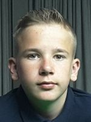

Ere liga
| Week 3 | Thuisploeg | Uitploeg | ||
|---|---|---|---|---|
| di 13-09-22 | Re-Spot B | - | Re-Spot C | |
| di 13-09-22 | Riley Inn A | - | Happy Snooker A | |
| di 13-09-22 | Re-Spot A | - | Zuma B | |
| di 13-09-22 | Zuma A | - | Biljart Lounge A | |
| di 13-09-22 | Buckingham A | - | VRIJ | |
| di 13-09-22 | Riley Inn C | - | Riley Inn B | |
| di 13-09-22 | VRIJ | - | Happy Snooker C | |
| wo 14-09-22 | Happy Snooker B | - | De Kreeft A | |
| wo 14-09-22 | Buckingham C | - | Buckingham B |
| Week 2 | Thuisploeg | Uitploeg | ||
|---|---|---|---|---|
| ma 05-09-22 | Happy Snooker C | - | Re-Spot B | |
| di 06-09-22 | Buckingham B | 14 - 4 | Riley Inn C | |
| wo 07-09-22 | Biljart Lounge A | 11 - 7 | Buckingham A | |
| di 06-09-22 | Happy Snooker A | 13 - 5 | Happy Snooker B | |
| di 06-09-22 | VRIJ | 0 - 9 | Riley Inn A | |
| wo 07-09-22 | De Kreeft A | 13 - 5 | Re-Spot C | |
| di 06-09-22 | Zuma B | 3 - 15 | Buckingham C | |
| di 06-09-22 | Riley Inn B | 9 - 0 | VRIJ | |
| di 06-09-22 | Re-Spot A | - | Zuma A |
| Week 1 | Thuisploeg | Uitploeg | ||
|---|---|---|---|---|
| di 23-08-22 | Zuma A | 14 - 4 | Zuma B | |
| di 30-08-22 | Riley Inn C | 9 - 0 | VRIJ | |
| wo 31-08-22 | Riley Inn A | 5 - 13 | Riley Inn B | |
| di 30-08-22 | VRIJ | 0 - 9 | Happy Snooker A | |
| di 30-08-22 | Re-Spot A | 4 - 14 | Re-Spot C | |
| di 30-08-22 | Re-Spot B | 11 - 7 | De Kreeft A | |
| di 30-08-22 | Buckingham A | 14 - 4 | Buckingham B | |
| wo 31-08-22 | Happy Snooker B | 9 - 9 | Happy Snooker C | |
| wo 31-08-22 | Buckingham C | 7 - 11 | Biljart Lounge A |
| GW | W | G | V | PTN | ||
|---|---|---|---|---|---|---|
| 1. | Biljart Lounge A | 2 | 2 | 0 | 0 | 22 |
| 2. | Buckingham C | 2 | 1 | 0 | 1 | 22 |
| 3. | Happy Snooker A | 2 | 1 | 1 | 0 | 22 |
| 4. | Riley Inn B | 2 | 1 | 1 | 0 | 22 |
| 5. | Buckingham A | 2 | 1 | 0 | 1 | 21 |
| 6. | De Kreeft A | 2 | 1 | 0 | 1 | 20 |
| 7. | Re-Spot C | 2 | 1 | 0 | 1 | 19 |
| 8. | Buckingham B | 2 | 1 | 0 | 1 | 18 |
| 9. | Zuma A | 1 | 1 | 0 | 0 | 14 |
| 10. | Happy Snooker B | 2 | 0 | 1 | 1 | 14 |
| 11. | Riley Inn A | 2 | 0 | 1 | 1 | 14 |
| 12. | Riley Inn C | 2 | 0 | 1 | 1 | 13 |
| 13. | Re-Spot B | 1 | 1 | 0 | 0 | 11 |
| 14. | Happy Snooker C | 1 | 0 | 1 | 0 | 9 |
| 15. | Zuma B | 2 | 0 | 0 | 2 | 7 |
| 16. | Re-Spot A | 1 | 0 | 0 | 1 | 4 |
1ste afdeling
| Week 3 | Thuisploeg | Uitploeg | ||
|---|---|---|---|---|
| ma 12-09-22 | Buckingham D | - | Riley Inn D | |
| ma 12-09-22 | Happy Snooker D | - | NRG A | |
| ma 12-09-22 | De Kreeft C | - | Snooker Sports A | |
| di 13-09-22 | De Kreeft B | - | Re-Spot D | |
| di 13-09-22 | Biljart Lounge B | - | Buckingham E | |
| di 13-09-22 | VRIJ | - | De Maxx B | |
| wo 14-09-22 | De Maxx A | - | De Kreeft D | |
| wo 14-09-22 | Re-Spot E | - | De Maxx C | |
| wo 14-09-22 | NRG B | - | Biljart Lounge C |
| Week 2 | Thuisploeg | Uitploeg | ||
|---|---|---|---|---|
| ma 05-09-22 | Buckingham E | 9 - 0 | VRIJ | |
| ma 05-09-22 | De Kreeft D | 6 - 12 | Happy Snooker D | |
| di 06-09-22 | Biljart Lounge C | 7 - 11 | Buckingham D | |
| wo 07-09-22 | Snooker Sports A | 11 - 7 | De Kreeft B | |
| di 06-09-22 | NRG A | 9 - 9 | Re-Spot D | |
| di 06-09-22 | Riley Inn D | 6 - 12 | De Maxx A | |
| wo 07-09-22 | Re-Spot E | 13 - 5 | NRG B | |
| wo 07-09-22 | De Maxx B | 8 - 10 | De Kreeft C | |
| do 08-09-22 | De Maxx C | 4 - 14 | Biljart Lounge B |
| Week 1 | Thuisploeg | Uitploeg | ||
|---|---|---|---|---|
| di 30-08-22 | Buckingham D | 6 - 12 | Buckingham E | |
| di 30-08-22 | De Kreeft C | 8 - 10 | De Kreeft D | |
| di 30-08-22 | Happy Snooker D | 14 - 4 | Snooker Sports A | |
| di 30-08-22 | VRIJ | 0 - 9 | Riley Inn D | |
| di 30-08-22 | Biljart Lounge B | 12 - 6 | Biljart Lounge C | |
| di 30-08-22 | De Kreeft B | 7 - 11 | NRG A | |
| do 01-09-22 | NRG B | 5 - 13 | De Maxx C | |
| wo 31-08-22 | De Maxx A | 12 - 6 | De Maxx B | |
| do 01-09-22 | Re-Spot E | 4 - 14 | Re-Spot D |
| GW | W | G | V | PTN | ||
|---|---|---|---|---|---|---|
| 1. | Biljart Lounge B | 2 | 2 | 0 | 0 | 26 |
| 2. | Happy Snooker D | 2 | 2 | 0 | 0 | 26 |
| 3. | De Maxx A | 2 | 2 | 0 | 0 | 24 |
| 4. | Re-Spot D | 2 | 1 | 1 | 0 | 23 |
| 5. | Buckingham E | 2 | 1 | 1 | 0 | 21 |
| 6. | NRG A | 2 | 1 | 1 | 0 | 20 |
| 7. | De Kreeft C | 2 | 1 | 0 | 1 | 18 |
| 8. | Buckingham D | 2 | 1 | 0 | 1 | 17 |
| 9. | De Maxx C | 2 | 1 | 0 | 1 | 17 |
| 10. | Re-Spot E | 2 | 1 | 0 | 1 | 17 |
| 11. | De Kreeft D | 2 | 1 | 0 | 1 | 16 |
| 12. | Snooker Sports A | 2 | 1 | 0 | 1 | 15 |
| 13. | Riley Inn D | 2 | 0 | 1 | 1 | 15 |
| 14. | De Kreeft B | 2 | 0 | 0 | 2 | 14 |
| 15. | De Maxx B | 2 | 0 | 0 | 2 | 14 |
| 16. | Biljart Lounge C | 2 | 0 | 0 | 2 | 13 |
| 17. | NRG B | 2 | 0 | 0 | 2 | 10 |
2de afdeling
| Week 3 | Thuisploeg | Uitploeg | ||
|---|---|---|---|---|
| ma 12-09-22 | Happy Snooker E | - | Re-Spot F | |
| ma 12-09-22 | De Kreeft E | - | Re-Spot G | |
| ma 12-09-22 | Zuma C | - | Buckingham G | |
| di 13-09-22 | Riley Inn G | - | Zuma D | |
| di 13-09-22 | De Kreeft F | - | VRIJ | |
| di 13-09-22 | Riley Inn E | - | NRG C | |
| di 13-09-22 | Buckingham F | - | VRIJ | |
| di 13-09-22 | Snooker Sports B | - | Riley Inn F | |
| do 15-09-22 | Happy Snooker G | - | Happy Snooker F |
| Week 2 | Thuisploeg | Uitploeg | ||
|---|---|---|---|---|
| wo 07-09-22 | Riley Inn G | 6 - 12 | Zuma C | |
| di 06-09-22 | Riley Inn F | 8 - 10 | De Kreeft F | |
| di 06-09-22 | VRIJ | 0 - 9 | Riley Inn E | |
| di 06-09-22 | VRIJ | 0 - 9 | Happy Snooker E | |
| wo 07-09-22 | Zuma D | 10 - 8 | Buckingham F | |
| di 06-09-22 | Re-Spot F | 11 - 7 | Re-Spot G | |
| wo 07-09-22 | Buckingham G | 13 - 5 | Snooker Sports B | |
| do 08-09-22 | Happy Snooker F | 3 - 15 | De Kreeft E | |
| do 08-09-22 | NRG C | 7 - 11 | Happy Snooker G |
| Week 1 | Thuisploeg | Uitploeg | ||
|---|---|---|---|---|
| ma 29-08-22 | Zuma C | 6 - 12 | Zuma D | |
| ma 29-08-22 | De Kreeft E | 8 - 10 | Re-Spot F | |
| ma 29-08-22 | Happy Snooker E | 12 - 6 | Happy Snooker F | |
| di 30-08-22 | Buckingham F | 9 - 9 | Buckingham G | |
| wo 31-08-22 | De Kreeft F | 7 - 11 | NRG C | |
| di 30-08-22 | Riley Inn G | 9 - 9 | Re-Spot G | |
| di 30-08-22 | Riley Inn E | 7 - 11 | Riley Inn F | |
| di 30-08-22 | Snooker Sports B | 9 - 0 | VRIJ | |
| do 01-09-22 | Happy Snooker G | 9 - 0 | VRIJ |
| GW | W | G | V | PTN | ||
|---|---|---|---|---|---|---|
| 1. | De Kreeft E | 2 | 1 | 0 | 1 | 23 |
| 2. | Zuma D | 2 | 2 | 0 | 0 | 22 |
| 3. | Buckingham G | 2 | 1 | 1 | 0 | 22 |
| 4. | Re-Spot F | 2 | 2 | 0 | 0 | 21 |
| 5. | Happy Snooker E | 2 | 1 | 1 | 0 | 21 |
| 6. | Happy Snooker G | 2 | 1 | 1 | 0 | 20 |
| 7. | Riley Inn F | 2 | 1 | 0 | 1 | 19 |
| 8. | NRG C | 2 | 1 | 0 | 1 | 18 |
| 9. | Zuma C | 2 | 1 | 0 | 1 | 18 |
| 10. | De Kreeft F | 2 | 1 | 0 | 1 | 17 |
| 11. | Buckingham F | 2 | 0 | 1 | 1 | 17 |
| 12. | Re-Spot G | 2 | 0 | 1 | 1 | 16 |
| 13. | Riley Inn E | 2 | 0 | 1 | 1 | 16 |
| 14. | Riley Inn G | 2 | 0 | 1 | 1 | 15 |
| 15. | Snooker Sports B | 2 | 0 | 1 | 1 | 14 |
| 16. | Happy Snooker F | 2 | 0 | 0 | 2 | 9 |
3de afdeling
| Week 3 | Thuisploeg | Uitploeg | ||
|---|---|---|---|---|
| ma 12-09-22 | Re-Spot H | - | Zuma F | |
| ma 12-09-22 | Riley Inn J | - | De Kreeft H | |
| di 13-09-22 | Zuma E | - | De Maxx E | |
| di 13-09-22 | Happy Snooker K | - | Happy Snooker J | |
| di 13-09-22 | VRIJ | - | Riley Inn I | |
| di 13-09-22 | De Kreeft I | - | Happy Snooker H | |
| di 13-09-22 | NRG D | - | Re-Spot I | |
| wo 14-09-22 | De Maxx D | - | Happy Snooker I | |
| wo 14-09-22 | Riley Inn H | - | De Kreeft G |
| Week 2 | Thuisploeg | Uitploeg | ||
|---|---|---|---|---|
| di 06-09-22 | Happy Snooker J | 7 - 5 | NRG D | |
| ma 05-09-22 | De Kreeft H | 4 - 8 | Re-Spot I | |
| ma 05-09-22 | Re-Spot H | 3 - 9 | Zuma E | |
| di 06-09-22 | Zuma F | 3 - 9 | De Maxx D | |
| di 06-09-22 | Happy Snooker H | 5 - 7 | Riley Inn J | |
| di 06-09-22 | De Kreeft G | 7 - 5 | Happy Snooker K | |
| wo 07-09-22 | Riley Inn I | 7 - 5 | De Kreeft I | |
| wo 07-09-22 | Happy Snooker I | 8 - 4 | Riley Inn H | |
| wo 07-09-22 | De Maxx E | 6 - 0 | VRIJ |
| Week 1 | Thuisploeg | Uitploeg | ||
|---|---|---|---|---|
| ma 29-08-22 | Riley Inn J | 8 - 4 | Happy Snooker J | |
| di 30-08-22 | Re-Spot H | 5 - 7 | Re-Spot I | |
| di 30-08-22 | De Kreeft I | 5 - 7 | De Kreeft G | |
| di 30-08-22 | Zuma E | 5 - 7 | Zuma F | |
| di 30-08-22 | VRIJ | 0 - 6 | Happy Snooker I | |
| di 30-08-22 | Happy Snooker K | 6 - 6 | Happy Snooker H | |
| di 30-08-22 | NRG D | 5 - 7 | De Kreeft H | |
| wo 31-08-22 | De Maxx D | 8 - 4 | De Maxx E | |
| wo 31-08-22 | Riley Inn H | 8 - 4 | Riley Inn I |
| GW | W | G | V | PTN | ||
|---|---|---|---|---|---|---|
| 1. | De Maxx D | 2 | 2 | 0 | 0 | 17 |
| 2. | Re-Spot I | 2 | 2 | 0 | 0 | 15 |
| 3. | Riley Inn J | 2 | 2 | 0 | 0 | 15 |
| 4. | De Kreeft G | 2 | 2 | 0 | 0 | 14 |
| 5. | Happy Snooker I | 2 | 1 | 1 | 0 | 14 |
| 6. | Zuma E | 2 | 1 | 0 | 1 | 14 |
| 7. | Riley Inn H | 2 | 1 | 0 | 1 | 12 |
| 8. | De Kreeft H | 2 | 1 | 0 | 1 | 11 |
| 9. | Happy Snooker J | 2 | 1 | 0 | 1 | 11 |
| 10. | Riley Inn I | 2 | 1 | 0 | 1 | 11 |
| 11. | Happy Snooker H | 2 | 0 | 1 | 1 | 11 |
| 12. | Happy Snooker K | 2 | 0 | 1 | 1 | 11 |
| 13. | Zuma F | 2 | 1 | 0 | 1 | 10 |
| 14. | De Kreeft I | 2 | 0 | 0 | 2 | 10 |
| 15. | De Maxx E | 2 | 0 | 1 | 1 | 10 |
| 16. | NRG D | 2 | 0 | 0 | 2 | 10 |
| 17. | Re-Spot H | 2 | 0 | 0 | 2 | 8 |
4de afdeling
| Week 3 | Thuisploeg | Uitploeg | ||
|---|---|---|---|---|
| ma 12-09-22 | De Kreeft J | - | Re-Spot M | |
| wo 07-09-22 | Happy Snooker N | - | Riley Inn K | |
| di 13-09-22 | Biljart Lounge D | - | Buckingham I | |
| di 13-09-22 | Re-Spot J | - | De Kreeft L | |
| di 13-09-22 | Zuma G | - | Buckingham H | |
| wo 14-09-22 | Re-Spot L | - | VRIJ | |
| do 15-09-22 | De Maxx F | - | Re-Spot K | |
| do 15-09-22 | Happy Snooker M | - | De Kreeft K | |
| do 15-09-22 | NRG E | - | Happy Snooker L |
| Week 2 | Thuisploeg | Uitploeg | ||
|---|---|---|---|---|
| ma 05-09-22 | Buckingham I | 5 - 7 | Re-Spot J | |
| ma 05-09-22 | De Kreeft K | 5 - 7 | Re-Spot M | |
| ma 05-09-22 | Riley Inn K | 4 - 8 | De Kreeft J | |
| di 06-09-22 | Buckingham H | - | De Maxx F | |
| di 06-09-22 | Re-Spot K | 9 - 3 | NRG E | |
| di 06-09-22 | De Kreeft L | 8 - 4 | Happy Snooker N | |
| di 06-09-22 | VRIJ | 0 - 6 | Biljart Lounge D | |
| wo 07-09-22 | Re-Spot L | 2 - 10 | Zuma G | |
| do 08-09-22 | Happy Snooker L | 3 - 9 | Happy Snooker M |
| Week 1 | Thuisploeg | Uitploeg | ||
|---|---|---|---|---|
| ma 29-08-22 | De Kreeft J | 5 - 7 | De Kreeft K | |
| di 30-08-22 | Biljart Lounge D | 5 - 7 | Buckingham H | |
| di 30-08-22 | Zuma G | 6 - 0 | VRIJ | |
| di 30-08-22 | Re-Spot J | 5 - 7 | Re-Spot K | |
| di 30-08-22 | Happy Snooker N | 9 - 3 | Happy Snooker L | |
| wo 31-08-22 | Re-Spot L | 5 - 7 | Re-Spot M | |
| do 01-09-22 | NRG E | 6 - 6 | De Kreeft L | |
| do 01-09-22 | Happy Snooker M | 8 - 4 | Riley Inn K | |
| vr 02-09-22 | De Maxx F | 5 - 7 | Buckingham I |
| GW | W | G | V | PTN | ||
|---|---|---|---|---|---|---|
| 1. | Happy Snooker M | 2 | 2 | 0 | 0 | 17 |
| 2. | Re-Spot K | 2 | 2 | 0 | 0 | 16 |
| 3. | Zuma G | 2 | 1 | 1 | 0 | 16 |
| 4. | Re-Spot M | 2 | 2 | 0 | 0 | 14 |
| 5. | De Kreeft L | 2 | 1 | 1 | 0 | 14 |
| 6. | De Kreeft J | 2 | 1 | 0 | 1 | 13 |
| 7. | Happy Snooker N | 2 | 1 | 0 | 1 | 13 |
| 8. | Buckingham I | 2 | 1 | 0 | 1 | 12 |
| 9. | De Kreeft K | 2 | 1 | 0 | 1 | 12 |
| 10. | Re-Spot J | 2 | 1 | 0 | 1 | 12 |
| 11. | Biljart Lounge D | 2 | 0 | 1 | 1 | 11 |
| 12. | NRG E | 2 | 0 | 1 | 1 | 9 |
| 13. | Riley Inn K | 2 | 0 | 0 | 2 | 8 |
| 14. | Buckingham H | 1 | 1 | 0 | 0 | 7 |
| 15. | Re-Spot L | 2 | 0 | 0 | 2 | 7 |
| 16. | Happy Snooker L | 2 | 0 | 0 | 2 | 6 |
| 17. | De Maxx F | 1 | 0 | 0 | 1 | 5 |
5de afdeling
| Week 3 | Thuisploeg | Uitploeg | ||
|---|---|---|---|---|
| ma 12-09-22 | Re-Spot P | - | Zuma I | |
| ma 12-09-22 | Re-Spot N | - | Biljart Lounge E | |
| di 13-09-22 | VRIJ | - | Riley Inn M | |
| di 13-09-22 | VRIJ | - | Happy Snooker P | |
| wo 14-09-22 | Re-Spot T | - | Happy Snooker O | |
| wo 14-09-22 | Happy Snooker Q | - | Re-Spot S | |
| wo 14-09-22 | Zuma H | - | Re-Spot O | |
| wo 14-09-22 | Riley Inn L | - | Riley Inn N | |
| do 15-09-22 | Re-Spot R | - | Re-Spot Q |
| Week 2 | Thuisploeg | Uitploeg | ||
|---|---|---|---|---|
| ma 05-09-22 | Re-Spot P | 3 - 6 | Zuma H | |
| ma 05-09-22 | Re-Spot Q | 4 - 0 | VRIJ | |
| wo 07-09-22 | Biljart Lounge E | 4 - 0 | VRIJ | |
| wo 07-09-22 | Happy Snooker O | 1 - 8 | Re-Spot R | |
| wo 07-09-22 | Re-Spot O | 7 - 2 | Happy Snooker Q | |
| do 08-09-22 | Riley Inn M | 2 - 7 | Riley Inn N | |
| wo 07-09-22 | Zuma I | 6 - 3 | Re-Spot T | |
| do 08-09-22 | Happy Snooker P | 4 - 5 | Riley Inn L | |
| do 08-09-22 | Re-Spot S | 4 - 5 | Re-Spot N |
| Week 1 | Thuisploeg | Uitploeg | ||
|---|---|---|---|---|
| ma 29-08-22 | Re-Spot N | 4 - 5 | Re-Spot Q | |
| do 25-08-22 | Re-Spot P | 4 - 5 | Riley Inn N | |
| di 30-08-22 | VRIJ | 0 - 4 | Happy Snooker P | |
| di 30-08-22 | VRIJ | 0 - 4 | Biljart Lounge E | |
| wo 31-08-22 | Happy Snooker Q | 2 - 7 | Happy Snooker O | |
| wo 31-08-22 | Riley Inn L | 7 - 2 | Riley Inn M | |
| ma 29-08-22 | Zuma H | 6 - 3 | Zuma I | |
| wo 31-08-22 | Re-Spot T | 1 - 8 | Re-Spot O | |
| do 01-09-22 | Re-Spot R | 8 - 1 | Re-Spot S |
| GW | W | G | V | PTN | ||
|---|---|---|---|---|---|---|
| 1. | Re-Spot R | 2 | 2 | 0 | 0 | 16 |
| 2. | Re-Spot O | 2 | 2 | 0 | 0 | 15 |
| 3. | Riley Inn L | 2 | 2 | 0 | 0 | 12 |
| 4. | Riley Inn N | 2 | 2 | 0 | 0 | 12 |
| 5. | Zuma H | 2 | 2 | 0 | 0 | 12 |
| 6. | Re-Spot N | 2 | 1 | 0 | 1 | 9 |
| 7. | Re-Spot Q | 2 | 1 | 1 | 0 | 9 |
| 8. | Zuma I | 2 | 1 | 0 | 1 | 9 |
| 9. | Happy Snooker O | 2 | 1 | 0 | 1 | 8 |
| 10. | Biljart Lounge E | 2 | 0 | 2 | 0 | 8 |
| 11. | Happy Snooker P | 2 | 0 | 1 | 1 | 8 |
| 12. | Re-Spot P | 2 | 0 | 0 | 2 | 7 |
| 13. | Re-Spot S | 2 | 0 | 0 | 2 | 5 |
| 14. | Happy Snooker Q | 2 | 0 | 0 | 2 | 4 |
| 15. | Re-Spot T | 2 | 0 | 0 | 2 | 4 |
| 16. | Riley Inn M | 2 | 0 | 0 | 2 | 4 |
Zaterdag
| Week 2 | Thuisploeg | Uitploeg | ||
|---|---|---|---|---|
| za 17-09-22 | Re-Spot X | - | Re-Spot U | |
| za 17-09-22 | Re-Spot V | - | Re-Spot W | |
| za 17-09-22 | NRG F | - | De Kreeft M | |
| za 17-09-22 | VRIJ | - | Happy Snooker R |
| Week 1 | Thuisploeg | Uitploeg | ||
|---|---|---|---|---|
| za 10-09-22 | Re-Spot U | - | Re-Spot V | |
| za 10-09-22 | Re-Spot W | - | Re-Spot X | |
| za 03-09-22 | Happy Snooker R | 4 - 8 | NRG F | |
| za 10-09-22 | De Kreeft M | 6 - 0 | VRIJ |
| GW | W | G | V | PTN | ||
|---|---|---|---|---|---|---|
| 1. | NRG F | 1 | 1 | 0 | 0 | 8 |
| 2. | De Kreeft M | 1 | 0 | 1 | 0 | 6 |
| 3. | Happy Snooker R | 1 | 0 | 0 | 1 | 4 |
| 4. | Re-Spot U | 0 | 0 | 0 | 0 | 0 |
| 5. | Re-Spot V | 0 | 0 | 0 | 0 | 0 |
| 6. | Re-Spot W | 0 | 0 | 0 | 0 | 0 |
| 7. | Re-Spot X | 0 | 0 | 0 | 0 | 0 |
| 14 \ 4 | Uit: Riley Inn C | × | ||
| Thuis: Buckingham B | Bokken Mathijs | Gerits Dietrich | Mercurio Claudio | |
| Hooyberghs Toon | (br 37) 64 - 23 55 - 14 | 50 - 33 66 - 11 | 69 - 10 86 - 13 | 6 |
 Verherstraeten Matthijs | 51 - 25 34 - 66 | 61 - 27 53 - 39 | 57 - 45 30 - 60 | 4 |
 Hulsmans Ruddy | 53 - 33 59 - 46 | 54 - 12 23 - 51 | 13 - 63 53 - 34 | 4 |
| 1 | 1 | 2 | ||
| 11 \ 7 | Uit: Buckingham A | × | ||
| Thuis: Biljart Lounge A | Hamblok Martijn | Draulans Kevin | Vermeiren Kristof | |
| Vanoppen Kobe | (br 36) 71 - 40 (br 41) 68 - 58 (br 36) | 58 - 50 (br 32) (br 79) 102 - 15 | (br 43) 71 - 1 (br 41) 58 - 29 | 6 |
 Kempenaers Gert | 41 - 68 33 - 71 | 59 - 77 25 - 58 (br 39) | 60 - 61 66 - 35 | 1 |
| Vandevoort Kevin | 60 - 47 51 - 26 | (br 37) 57 - 53 64 - 45 | 47 - 59 (br 33) 48 - 62 | 4 |
| 2 | 2 | 3 | ||
| 13 \ 5 | Uit: Happy Snooker B | × | ||
| Thuis: Happy Snooker A | Godeyne Nicky | Clauw Dimitri | Debay Kevin | |
|  Hoes Yorrit | 44 - 45 (br 42) 61 - 36 | 18 - 70 (br 44) 64 - 31 | 64 - 1 61 - 29 | 4 |
| Pauly Davy | 19 - 54 63 - 41 | 69 - 50 46 - 31 | (br 55) 61 - 2 77 - 8 | 5 |
| Moermans Johny | 57 - 34 (br 30) (br 32) 56 - 62 | 35 - 60 59 - 34 | (br 34) 58 - 49 (br 32) 70 - 20 | 4 |
| 3 | 2 | 0 | ||
| 13 \ 5 | Uit: Re-Spot C | × | ||
| Thuis: De Kreeft A | Monard Andries | Poilvache Bjorn | Wouters Mike | |
 Dethier Pierre | 20 - 67 (br 32) 57 - 28 | 23 - 42 64 - 34 | 60 - 47 50 - 57 | 3 |
 Reekmans Rudy | 50 - 37 1 - 68 (br 44) | 20 - 54 50 - 36 | 49 - 24 (br 35) 56 - 6 | 4 |
 Ruyters Theo | 71 - 8 (br 41) 71 - 9 | (br 72) 93 - 9 (br 34) 65 - 34 | (br 42) 51 - 13 (br 38) 89 - 8 | 6 |
| 2 | 2 | 1 | ||
| 3 \ 15 | Uit: Buckingham C | × | ||
| Thuis: Zuma B |  T'Syen Chris |  Rochanat Treepetch |  Kaerts Bjorn | |
| Gielen Rudi | 21 - 73 10 - 60 | 52 - 42 41 - 55 | 45 - 47 26 - 59 | 1 |
 Achten Bjorn | 22 - 120 (br 48+64) 64 - 18 | 42 - 53 29 - 64 | 33 - 52 (br 37) 69 - 22 | 2 |
| Ginefra Aurelio | 24 - 71 38 - 58 | 48 - 59 30 - 53 (br 35) | 59 - 64 6 - 49 | 0 |
| 5 | 5 | 5 | ||
| 14 \ 4 | Uit: Zuma B | × | ||
| Thuis: Zuma A | Gielen Rudi | Ginefra Aurelio | Achten Bjorn | |
| Buteneers Mark | 58 - 45 43 - 53 | 49 - 12 60 - 0 | 24 - 44 58 - 48 | 4 |
| Skalski Tomasz | 51 - 16 51 - 41 | 50 - 4 (br 30) 58 - 24 | 52 - 48 48 - 50 | 5 |
 Heusdens Jurian | (br 78) 112 - 8 (br 33) 73 - 16 | 60 - 52 51 - 47 | 50 - 14 8 - 50 | 5 |
| 1 | 0 | 3 | ||
| 5 \ 13 | Uit: Riley Inn B | × | ||
| Thuis: Riley Inn A | Brecel Luca |  D'hondt Johan |  Sokolowski Sybren | |
| Van Hove - Speltincx Kevin | 40 - 66 8 - 80 (br 53) | (br 32) 96 - 1 57 - 37 | 24 - 72 59 - 62 | 2 |
| Andries Wim | 56 - 60 25 - 57 | 13 - 70 21 - 67 | 38 - 60 (br 49) 73 - 66 | 1 |
| Smeulders Ivo | 32 - 67 70 - 58 | 26 - 59 61 - 54 | 24 - 75 (br 74) 13 - 76 (br 50) | 2 |
| 5 | 3 | 5 | ||
| 4 \ 14 | Uit: Re-Spot C | × | ||
| Thuis: Re-Spot A | Monard Andries | Wouters Mike | Poilvache Bjorn | |
| Vanrijkel Johny | 14 - 66 (br 34) 47 - 69 | 19 - 47 38 - 52 | 41 - 66 34 - 50 | 0 |
| Nys Jean Paul | 11 - 61 (br 30) 15 - 61 | 9 - 54 37 - 53 | 15 - 52 6 - 59 | 0 |
| Hulsbosch Michael | 67 - 23 9 - 68 | 58 - 10 68 - 16 | 59 - 30 35 - 76 | 4 |
| 5 | 4 | 5 | ||
| 11 \ 7 | Uit: De Kreeft A | × | ||
| Thuis: Re-Spot B | Reekmans Rudy | Ruyters Theo | Dethier Pierre | |
| Corens David | 62 - 43 51 - 29 | 58 - 34 66 - 67 | 21 - 60 48 - 29 | 4 |
| Corten Jan | (br 31) 60 - 17 50 - 58 | 54 - 60 21 - 67 (br 32) | 58 - 47 64 - 4 | 3 |
| Bellers Tim | 11 - 60 (br 33) 50 - 19 | 51 - 22 52 - 49 | 51 - 33 45 - 50 | 4 |
| 2 | 3 | 2 | ||
| 14 \ 4 | Uit: Buckingham B | × | ||
| Thuis: Buckingham A | Hooyberghs Toon | Hulsmans Ruddy | Verherstraeten Matthijs | |
| Vermeiren Kristof | 18 - 56 (br 61) 83 - 4 | (br 32) 73 - 6 (br 51) 71 - 16 | (br 31) 64 - 26 (br 32) 70 - 28 | 5 |
| Draulans Kevin | 45 - 69 (br 32) 57 - 49 | 25 - 63 61 - 62 | 67 - 30 60 - 31 | 3 |
| Hamblok Martijn | 76 - 6 46 - 21 | 66 - 45 49 - 21 | 56 - 21 61 - 29 | 6 |
| 2 | 2 | 0 | ||
| 9 \ 9 | Uit: Happy Snooker C | × | ||
| Thuis: Happy Snooker B | Mangelschots Rudi | Smeulders Erik |  Convens Robby | |
| Cornelis Jarne | 54 - 30 61 - 27 | 69 - 24 23 - 71 (br 31) | 61 - 25 34 - 63 | 4 |
| Clauw Dimitri | 61 - 12 55 - 46 | 41 - 51 41 - 59 | 39 - 52 46 - 58 | 2 |
| Debay Kevin | 55 - 28 46 - 25 | 14 - 51 71 - 45 | 1 - 61 (br 46) 20 - 64 (br 40) | 3 |
| 0 | 4 | 5 | ||
| 7 \ 11 | Uit: Biljart Lounge A | × | ||
| Thuis: Buckingham C | Vanoppen Kobe | Vandevoort Kevin | Kempenaers Gert | |
| Kaerts Bjorn | 8 - 74 (br 60) 57 - 6 | 60 - 55 22 - 59 | 36 - 51 63 - 16 | 3 |
| T'Syen Chris | (br 67) 67 - 10 53 - 39 | 38 - 53 66 - 49 | 44 - 71 7 - 48 | 3 |
| Rochanat Treepetch | 35 - 50 14 - 43 | 18 - 49 45 - 63 | 37 - 50 (br 40) 61 - 11 | 1 |
| 3 | 4 | 4 | ||
| 6 \ 12 | Uit: Happy Snooker D | × | ||
| Thuis: De Kreeft D | Nelissen Peter | Hermans Christoph | Slechten Jean-Paul | |
| Dingelstadt Vincent | 32 - 57 30 - 60 | 46 - 32 9 - 54 | 69 - 31 50 - 22 | 3 |
 Willemsen Johnny | 63 - 32 26 - 56 | 29 - 71 (br 33) 39 - 63 | 58 - 45 20 - 63 | 2 |
| Goffin Jochem | 22 - 80 (br 34) 40 - 49 | 51 - 12 13 - 56 | 31 - 57 32 - 56 | 1 |
| 5 | 4 | 3 | ||
| 7 \ 11 | Uit: Buckingham D | × | ||
| Thuis: Biljart Lounge C | Loos Davy | Goossens Jan |  Vermeyen Roel | |
 De Staelen Hendrik | (br 37) 67 - 17 52 - 41 | 13 - 50 12 - 59 (br 35) | 37 - 50 69 - 31 | 3 |
| Leclercq Georges | 32 - 51 49 - 60 | 58 - 29 16 - 56 | 25 - 69 (br 31) 67 - 62 | 2 |
| Ilsbroekx Wim | 29 - 63 40 - 47 | 74 - 33 40 - 60 | 19 - 43 62 - 43 | 2 |
| 4 | 4 | 3 | ||
| 11 \ 7 | Uit: De Kreeft B | × | ||
| Thuis: Snooker Sports A |  Wagemans Stefan | Stoffels Robby |  Thompson Rik | |
| Thijs Raf | 45 - 38 3 - 55 | 44 - 35 43 - 64 | 53 - 8 55 - 4 | 4 |
 Haerden Bart | 54 - 39 61 - 41 | 60 - 29 36 - 44 | 27 - 60 32 - 48 | 3 |
| Poulios Stephanos | 20 - 54 (br 40) 71 - 35 | 63 - 51 12 - 47 | 72 - 50 70 - 23 | 4 |
| 2 | 3 | 2 | ||
| 9 \ 9 | Uit: Re-Spot D | × | ||
| Thuis: NRG A | Cornitensis Rik |  Duchateau Patrick | Driesen Frank | |
| De L'arbre Marc | 40 - 55 (br 32) 51 - 63 | 60 - 15 65 - 21 | 29 - 47 38 - 57 | 2 |
| Wouters Tom | 54 - 45 47 - 34 | 60 - 38 31 - 49 | 16 - 47 (br 33) 55 - 61 | 3 |
 Marien Guy | 39 - 56 (br 32) 45 - 53 | 66 - 47 62 - 16 | 67 - 41 (br 35) 72 - 24 | 4 |
| 4 | 1 | 4 | ||
| 6 \ 12 | Uit: De Maxx A | × | ||
| Thuis: Riley Inn D |  Maes Eric |  Baygunes Ufuk | Dewingaerden Wesley | |
| Devos Eddy | 45 - 39 11 - 53 | 1 - 66 (br 31) 7 - 63 (br 53) | 1 - 54 38 - 55 | 1 |
| Annaloro Giuseppe | 37 - 46 46 - 30 | 57 - 45 47 - 53 | 7 - 59 49 - 27 | 3 |
| Jacobs Joachim | 49 - 56 22 - 55 | 48 - 47 6 - 22 | 20 - 60 56 - 20 | 2 |
| 4 | 4 | 4 | ||
| 13 \ 5 | Uit: NRG B | × | ||
| Thuis: Re-Spot E | Exelmans Marnix | Van Camp Jean-Pierre |  Derden Derk | |
 Daniels Wim | 27 - 43 53 - 16 | (br 32) 52 - 25 69 - 34 | 56 - 30 45 - 63 | 4 |
| Melotte Koen | 51 - 35 47 - 40 | 15 - 58 50 - 21 | 15 - 39 50 - 44 | 4 |
| Bartholomé David | 47 - 26 55 - 26 | 59 - 36 47 - 42 | 61 - 30 47 - 59 | 5 |
| 1 | 1 | 3 | ||
| 8 \ 10 | Uit: De Kreeft C | × | ||
| Thuis: De Maxx B | Keller Olivier | Birtles Cymon | Wilhelmy Frederic | |
 Janssen Maarten | 68 - 30 26 - 53 (br 37) | 51 - 21 36 - 54 | 33 - 41 62 - 34 | 3 |
| Gijsen Jimmy | 42 - 44 56 - 27 | 20 - 60 31 - 47 | (br 31) 49 - 64 50 - 23 | 2 |
| Luining Nicky | 49 - 37 82 - 29 | 34 - 54 25 - 52 | 63 - 49 53 - 55 | 3 |
| 2 | 5 | 3 | ||
| 4 \ 14 | Uit: Biljart Lounge B | × | ||
| Thuis: De Maxx C |  Dorissen Robby | Charot Pascal | Lenaerts Georges | |
 Van Oppen Raf | 41 - 60 18 - 47 | 61 - 49 26 - 58 | 23 - 50 29 - 46 | 1 |
| Brepoels Erwin | 10 - 55 48 - 59 | 23 - 54 55 - 9 | 10 - 63 7 - 71 (br 48) | 1 |
| Schrijvers Peter | 40 - 69 10 - 61 | 12 - 72 (br 38) 30 - 64 | 62 - 28 48 - 4 | 2 |
| 6 | 4 | 4 | ||
| 6 \ 12 | Uit: Buckingham E | × | ||
| Thuis: Buckingham D |  Snyers Tom |  De Wit Matthias | Vansteenkiste Peter | |
| Vermeyen Roel | 11 - 80 (br 52) 40 - 30 | 12 - 49 24 - 53 | 30 - 64 40 - 60 | 1 |
| Van Acoleyen Kris | 11 - 55 30 - 60 | 55 - 24 55 - 14 | 54 - 41 56 - 34 | 4 |
| Loos Davy | 7 - 61 (br 34) 30 - 59 (br 31) | 38 - 28 41 - 63 | 21 - 64 15 - 75 | 1 |
| 5 | 3 | 4 | ||
| 8 \ 10 | Uit: De Kreeft D | × | ||
| Thuis: De Kreeft C | Goffin Jochem | Willemsen Johnny | Dingelstadt Vincent | |
| Keller Olivier | 42 - 63 26 - 46 | 50 - 40 36 - 59 | 61 - 28 9 - 66 (br 40) | 2 |
| Wilhelmy Frederic | 55 - 53 27 - 61 | 40 - 51 46 - 34 | 28 - 58 69 - 23 | 3 |
| Birtles Cymon | 50 - 11 52 - 16 | 69 - 13 29 - 52 | 63 - 86 36 - 70 | 3 |
| 3 | 3 | 4 | ||
| 14 \ 4 | Uit: Snooker Sports A | × | ||
| Thuis: Happy Snooker D | Haerden Bart | Poulios Stephanos | Jurrissen Jeremias | |
| Slechten Jean-Paul | 51 - 43 66 - 34 | 50 - 66 61 - 53 (br 35) | 22 - 54 48 - 22 | 4 |
| Nelissen Peter | 67 - 28 63 - 14 | 50 - 37 60 - 37 | 67 - 26 45 - 7 | 6 |
| Hermans Christoph | 44 - 52 52 - 28 | 56 - 45 58 - 51 | 53 - 37 44 - 46 | 4 |
| 1 | 1 | 2 | ||
| 12 \ 6 | Uit: Biljart Lounge C | × | ||
| Thuis: Biljart Lounge B | De Staelen Hendrik | Leclercq Georges |  Lacroix Jonas | |
| Dorissen Robby | 47 - 29 (br 66) 94 - 12 | 61 - 33 (br 32) 54 - 9 | 60 - 45 (br 44) 69 - 44 | 6 |
| Lenaerts Georges | 25 - 53 42 - 52 | 55 - 20 39 - 25 | 16 - 73 (br 31) 48 - 14 | 3 |
| Charot Pascal | 44 - 53 23 - 53 | 61 - 35 57 - 49 | 59 - 61 62 - 51 | 3 |
| 4 | 0 | 2 | ||
| 7 \ 11 | Uit: NRG A | × | ||
| Thuis: De Kreeft B | Geukens Marnik | Marien Guy | Daniels Willy | |
| Wagemans Stefan | 9 - 49 26 - 48 | 57 - 23 63 - 32 | 49 - 29 37 - 60 | 3 |
| Stoffels Robby | 37 - 33 43 - 36 | 27 - 55 38 - 43 | 26 - 61 29 - 53 | 2 |
| Thompson Rik | 22 - 61 53 - 38 | 56 - 49 23 - 60 | 5 - 43 36 - 51 | 2 |
| 3 | 3 | 5 | ||
| 5 \ 13 | Uit: De Maxx C | × | ||
| Thuis: NRG B | Schrijvers Peter | Brepoels Erwin | Bloemen Lennert | |
| Derden Derk | 12 - 63 (br 33) 58 - 44 | 44 - 71 62 - 66 | 68 - 28 19 - 56 | 2 |
| Van Camp Jean-Pierre | 25 - 61 18 - 60 | 54 - 37 20 - 64 (br 36) | 75 - 42 22 - 60 | 2 |
| Exelmans Marnix | 33 - 72 50 - 64 | 63 - 28 41 - 61 | 43 - 47 33 - 76 | 1 |
| 5 | 4 | 4 | ||
| 12 \ 6 | Uit: De Maxx B | × | ||
| Thuis: De Maxx A | Janssen Maarten | Van Oppen Raf | Gijsen Jimmy | |
| Maes Eric | 24 - 33 49 - 41 | 67 - 54 31 - 55 | 60 - 20 56 - 8 | 4 |
| Dewingaerden Wesley | 51 - 29 74 - 66 | (br 46) 54 - 14 52 - 56 | 65 - 29 32 - 50 | 4 |
| Baygunes Ufuk | 56 - 38 58 - 30 | 50 - 16 58 - 35 | 46 - 63 38 - 61 | 4 |
| 1 | 2 | 3 | ||
| 4 \ 14 | Uit: Re-Spot D | × | ||
| Thuis: Re-Spot E | Cornitensis Rik | Duchateau Patrick | Driesen Frank | |
| Bartholomé David | 6 - 74 46 - 63 | 38 - 68 36 - 76 | 34 - 71 35 - 49 | 0 |
| Daniels Wim | 11 - 55 27 - 65 | 35 - 53 51 - 57 | 35 - 67 70 - 47 | 1 |
| Melotte Koen | 68 - 47 48 - 38 | 41 - 51 5 - 57 | 20 - 60 62 - 33 | 3 |
| 4 | 6 | 4 | ||
| 6 \ 12 | Uit: Zuma C | × | ||
| Thuis: Riley Inn G | Saenen Yannick | Houben Benny |  Mok Andy | |
| Wawrzak Janny | 53 - 41 30 - 43 | 19 - 40 55 - 32 | 61 - 26 32 - 54 | 3 |
| Vario Giovanni | 17 - 49 41 - 57 | 25 - 50 8 - 64 | 56 - 35 23 - 42 | 1 |
| Michailidis Efstatios | 53 - 57 40 - 56 | 45 - 34 57 - 34 | 29 - 47 30 - 39 | 2 |
| 5 | 3 | 4 | ||
| 8 \ 10 | Uit: De Kreeft F | × | ||
| Thuis: Riley Inn F | Slegers Marc |  Jans Nico |  Warnier Serge | |
| Sijbers Joeri | 60 - 30 46 - 34 | 38 - 54 48 - 47 | 21 - 52 32 - 58 | 3 |
 Leenaers Ghislain | 63 - 20 62 - 45 | 27 - 57 44 - 53 | 57 - 37 48 - 4 | 4 |
| Clijsters Dimitri | 32 - 63 40 - 50 | 20 - 52 48 - 62 | 53 - 30 43 - 44 | 1 |
| 2 | 5 | 3 | ||
| 10 \ 8 | Uit: Buckingham F | × | ||
| Thuis: Zuma D | Boets Stefaan |  Hooyberghs Kris |  Hermans Niels | |
| Veltman Mario | 42 - 67 37 - 61 | 59 - 51 33 - 72 (br 40) | 37 - 58 43 - 72 | 1 |
| Pellens Stijn | 64 - 14 66 - 21 | 57 - 23 61 - 22 | 64 - 51 77 - 36 | 6 |
 T Syen Luc | 15 - 49 49 - 21 | 47 - 46 34 - 54 | 12 - 47 52 - 39 | 3 |
| 3 | 2 | 3 | ||
| 11 \ 7 | Uit: Re-Spot G | × | ||
| Thuis: Re-Spot F |  Mertens Stef |  Cornelissen Roby | Schalleij Wim | |
| Paessens Peter | 50 - 25 65 - 37 | 58 - 35 44 - 10 | 52 - 42 63 - 35 | 6 |
| Stijnen Johan | 55 - 21 32 - 61 | 0 - 52 21 - 64 | 49 - 12 42 - 46 | 2 |
| Veltens Steven | 28 - 47 53 - 30 | 43 - 58 49 - 20 | 52 - 26 34 - 42 | 3 |
| 2 | 3 | 2 | ||
| 13 \ 5 | Uit: Snooker Sports B | × | ||
| Thuis: Buckingham G | Geron Robert | Bringmans Stefan | Van den Heuvel René | |
 Berkmans Peter | 27 - 47 53 - 67 | 50 - 0 50 - 0 | 54 - 25 59 - 34 | 4 |
| Boons Niklaas | 60 - 39 62 - 8 | 50 - 0 50 - 0 | 36 - 61 57 - 41 | 5 |
| Conjaerts Danny | 30 - 44 15 - 61 | 50 - 0 50 - 0 | 52 - 42 54 - 47 | 4 |
| 4 | 0 | 1 | ||
| 3 \ 15 | Uit: De Kreeft E | × | ||
| Thuis: Happy Snooker F |  Van der Meeren Mathias | Van Der Hauwaert Danek | Vandeweyer Johan | |
| Smeers Jean-Paul | 13 - 55 29 - 60 (br 30) | 13 - 51 11 - 49 | 25 - 47 1 - 30 | 0 |
| Manshoven Filip | 13 - 51 24 - 57 | 35 - 65 31 - 55 | 46 - 64 15 - 52 | 0 |
| Ignoul Frank | 56 - 21 17 - 48 | 49 - 56 47 - 54 | 35 - 22 56 - 25 | 3 |
| 5 | 6 | 4 | ||
| 7 \ 11 | Uit: Happy Snooker G | × | ||
| Thuis: NRG C | Claes Timothy | Nelissen Filip | Corthouts Steve | |
| Vitali Marco | 61 - 49 50 - 13 | 17 - 60 65 - 1 | 21 - 63 (br 31) 47 - 60 | 3 |
 Beckers Steff | 33 - 45 35 - 49 | 50 - 57 17 - 53 | 49 - 32 21 - 50 | 1 |
| Geukens Marnik | 30 - 48 (br 36) 66 - 13 | 44 - 33 48 - 51 | 43 - 50 54 - 12 | 3 |
| 3 | 4 | 4 | ||
| 6 \ 12 | Uit: Zuma D | × | ||
| Thuis: Zuma C | Pellens Stijn |  Bertens Peter | T Syen Luc | |
| Maes Mitchell | 48 - 44 66 - 43 | 30 - 58 64 - 43 | 47 - 56 38 - 56 | 3 |
| Saenen Yannick | 28 - 66 56 - 59 | 30 - 55 30 - 53 | 77 - 40 24 - 63 | 1 |
| Mok Andy | 24 - 69 51 - 31 | 23 - 62 35 - 48 | 66 - 20 42 - 49 | 2 |
| 3 | 5 | 4 | ||
| 8 \ 10 | Uit: Re-Spot F | × | ||
| Thuis: De Kreeft E | Paessens Peter | Stijnen Johan | Veltens Steven | |
| Van der Meeren Mathias | 54 - 18 52 - 3 | 39 - 48 60 - 31 | 32 - 16 31 - 55 | 4 |
| Van Der Hauwaert Danek | 44 - 56 33 - 53 | 57 - 3 6 - 72 (br 40) | 19 - 52 30 - 57 | 1 |
| Kouklous Dimitrios | 44 - 43 34 - 45 | 47 - 70 (br 32) 62 - 23 | 30 - 57 50 - 30 | 3 |
| 3 | 3 | 4 | ||
| 12 \ 6 | Uit: Happy Snooker F | × | ||
| Thuis: Happy Snooker E |  De Bruyn Jan | Ignoul Frank | Smeers Jean-Paul | |
 Jans Danny | 52 - 19 46 - 47 | 49 - 31 41 - 71 | 55 - 38 46 - 47 | 3 |
 Simons Peter | 44 - 56 39 - 41 | 44 - 37 10 - 50 | 61 - 54 57 - 32 | 3 |
| Reniers Kris | 63 - 42 64 - 24 | (br 35) 80 - 32 57 - 38 | 57 - 20 47 - 33 | 6 |
| 3 | 2 | 1 | ||
| 9 \ 9 | Uit: Buckingham G | × | ||
| Thuis: Buckingham F | Theuwissen Peter | Berkmans Peter | Boons Niklaas | |
| Hooyberghs Kris | 55 - 75 (br 35) 50 - 35 | 56 - 25 54 - 17 | 52 - 25 64 - 67 | 4 |
| Hermans Niels | 44 - 53 57 - 21 | 58 - 21 46 - 56 | 35 - 53 66 - 45 | 3 |
 Voordeckers Davy | 54 - 36 40 - 67 | 28 - 61 2 - 58 | 56 - 61 46 - 42 | 2 |
| 3 | 3 | 3 | ||
| 7 \ 11 | Uit: NRG C | × | ||
| Thuis: De Kreeft F | Vitali Marco | Beckers Steff | Ritzen Eddy | |
| Jans Nico | 34 - 53 68 - 63 (br 31) | 51 - 31 7 - 72 (br 52) | 57 - 34 14 - 58 | 3 |
| Warnier Serge | 40 - 64 23 - 69 (br 33) | 61 - 74 30 - 59 | 20 - 47 52 - 18 | 1 |
| Slegers Marc | 1 - 66 29 - 79 | 52 - 42 54 - 45 | 47 - 59 62 - 30 | 3 |
| 5 | 3 | 3 | ||
| 9 \ 9 | Uit: Re-Spot G | × | ||
| Thuis: Riley Inn G | Mertens Stef | Cornelissen Roby | Mannaerts Bert | |
 Peters Rudi | (br 41) 54 - 17 38 - 47 | 44 - 67 (br 33) 54 - 22 | 45 - 28 61 - 23 | 4 |
| Vario Giovanni | 34 - 48 26 - 53 | 2 - 45 48 - 71 | 20 - 48 31 - 59 | 0 |
| Michailidis Efstatios | 51 - 65 46 - 22 | 63 - 54 42 - 26 | 41 - 3 52 - 47 | 5 |
| 4 | 3 | 2 | ||
| 7 \ 11 | Uit: Riley Inn F | × | ||
| Thuis: Riley Inn E | Clijsters Dimitri | Leenaers Ghislain | Sijbers Joeri | |
 Mewissen Andre | 33 - 58 40 - 23 | 12 - 65 24 - 50 | 23 - 50 46 - 55 | 1 |
| Vuurstaek Rudi | 50 - 41 50 - 34 | 37 - 60 17 - 50 | 61 - 6 26 - 66 | 3 |
 Frans Laurent | 40 - 53 49 - 32 | 20 - 75 29 - 49 | 60 - 33 78 - 22 | 3 |
| 2 | 6 | 3 | ||
| 7 \ 5 | Uit: NRG D | × | ||
| Thuis: Happy Snooker J | De Reydt Ronnie | Moors Danny | Belmans Thomas | |
 Bammens Didier | 51 - 18 28 - 40 | 48 - 78 | 34 - 48 | 1 |
| Schepers Bart | 61 - 36 | 18 - 73 | 73 - 17 63 - 28 | 3 |
| Roost Jan | 27 - 59 | 65 - 18 61 - 24 | 48 - 5 | 3 |
| 2 | 2 | 1 | ||
| 4 \ 8 | Uit: Re-Spot I | × | ||
| Thuis: De Kreeft H |  Lenaers Nico | Achten Wesley | Thys Kenneth | |
| Withofs Luc | 35 - 57 29 - 47 | 40 - 47 | 30 - 50 | 0 |
 Deborggraeve Michel | (br 32) 78 - 10 | 41 - 63 | 55 - 51 48 - 7 | 3 |
| Olaerts Jean | 48 - 42 | 12 - 62 14 - 51 | 41 - 61 | 1 |
| 2 | 4 | 2 | ||
| 3 \ 9 | Uit: Zuma E | × | ||
| Thuis: Re-Spot H | Geuns Guy | Agten Marc | Coenegrachts Peter | |
| Zargar Salim | 31 - 62 35 - 48 | 25 - 48 | 29 - 48 | 0 |
 Roosen Wim | 52 - 22 | 17 - 64 | 49 - 35 28 - 46 | 2 |
 Croughs Glenn | 43 - 48 | 72 - 44 15 - 57 | 21 - 53 | 1 |
| 3 | 3 | 3 | ||
| 3 \ 9 | Uit: De Maxx D | × | ||
| Thuis: Zuma F | Davids Patric | Ceulen Bart | Smeets Stijn | |
| Schildermans Ludo | 40 - 48 15 - 54 | 41 - 47 | 50 - 38 | 1 |
| Hoolsteens Tim | 40 - 53 | 53 - 19 | 4 - 49 35 - 45 | 1 |
| Neirinck Jason | 14 - 58 | 4 - 56 27 - 61 | 57 - 27 | 1 |
| 4 | 3 | 2 | ||
| 5 \ 7 | Uit: Riley Inn J | × | ||
| Thuis: Happy Snooker H | Donkers Freddy |  Schots Romain |  Vliegen Matt | |
 Nelissen Frank | 51 - 26 48 - 40 | 47 - 58 | 8 - 52 | 2 |
| Maes Kristof | 25 - 50 | 53 - 26 | 49 - 19 38 - 60 | 2 |
| Lafosse Gert | 50 - 26 | 48 - 49 31 - 63 | 26 - 61 | 1 |
| 1 | 3 | 3 | ||
| 7 \ 5 | Uit: Happy Snooker K | × | ||
| Thuis: De Kreeft G | Byloos Olivier | Vermeulen Maarten |  Kleynen Youri | |
| Vandebosch Tristan | 60 - 28 40 - 56 | 39 - 66 | 61 - 26 | 2 |
| Roox Martijn | 6 - 67 | 54 - 1 | 58 - 33 51 - 31 | 3 |
| Vanspauwen Yannick | 60 - 49 | 22 - 55 55 - 20 | 29 - 58 | 2 |
| 2 | 2 | 1 | ||
| 7 \ 5 | Uit: De Kreeft I | × | ||
| Thuis: Riley Inn I |  Geraci Salvatore | Depas Benoît |  Van Den Wyngaert Gaëtan | |
| Broux Marcel | 48 - 58 36 - 48 | 58 - 46 | 33 - 55 | 1 |
 Deveux Jan | 61 - 40 | 64 - 57 | 59 - 35 38 - 62 | 3 |
| Aerts Kris | 59 - 18 | 54 - 31 57 - 53 | 29 - 42 | 3 |
| 2 | 0 | 3 | ||
| 8 \ 4 | Uit: Riley Inn H | × | ||
| Thuis: Happy Snooker I |  Rutkowski Peter | Steegmans Jochen | Rosius Tom | |
| Vanwalleghem Stany | 32 - 45 29 - 72 | 51 - 24 | 54 - 41 | 2 |
 Aerts Luc | 31 - 61 | 58 - 23 | 52 - 36 51 - 19 | 3 |
 Adriaens Johny | 37 - 48 | 50 - 44 69 - 38 | 60 - 34 | 3 |
| 4 | 0 | 0 | ||
| 8 \ 4 | Uit: Happy Snooker J | × | ||
| Thuis: Riley Inn J | Bammens Didier |  Hanno Julien | Roost Jan | |
| Schots Romain | 58 - 33 62 - 7 | 52 - 31 | 6 - 55 | 3 |
| Donkers Freddy | 51 - 46 | 49 - 40 | 31 - 58 23 - 50 | 2 |
| Vliegen Matt | 43 - 22 | 31 - 48 43 - 39 | 42 - 11 | 3 |
| 0 | 1 | 3 | ||
| 5 \ 7 | Uit: Re-Spot I | × | ||
| Thuis: Re-Spot H | Thys Kenneth | Achten Wesley | Lenaers Nico | |
| Roosen Wim | 48 - 63 51 - 38 | 26 - 47 | 45 - 55 | 1 |
| Croughs Glenn | 20 - 43 | 42 - 29 | 29 - 62 38 - 29 | 2 |
| Zargar Salim | 51 - 62 | 50 - 29 26 - 51 | 47 - 11 | 2 |
| 3 | 2 | 2 | ||
| 5 \ 7 | Uit: De Kreeft G | × | ||
| Thuis: De Kreeft I | Vanspauwen Yannick | Roox Martijn | Vandebosch Tristan | |
| Van Den Wyngaert Gaëtan | (br 31) 59 - 66 59 - 47 | 49 - 26 | 31 - 54 | 2 |
| Depas Benoît | 3 - 64 | 68 - 39 | 43 - 23 35 - 61 | 2 |
| Geraci Salvatore | 23 - 54 | 19 - 35 22 - 54 | 64 - 46 | 1 |
| 3 | 2 | 2 | ||
| 5 \ 7 | Uit: Zuma F | × | ||
| Thuis: Zuma E | Hoolsteens Tim | Schildermans Ludo | Neirinck Jason | |
| Geuns Guy | 43 - 72 21 - 44 | 30 - 57 | 43 - 32 | 1 |
| Agten Marc | 48 - 38 | 51 - 11 | 54 - 39 56 - 38 | 4 |
| Coenegrachts Peter | 43 - 66 | 34 - 72 35 - 48 | 37 - 59 | 0 |
| 3 | 3 | 1 | ||
| 6 \ 6 | Uit: Happy Snooker H | × | ||
| Thuis: Happy Snooker K | Lafosse Gert | Maes Kristof | Nelissen Frank | |
| Grosemans Patrick | 60 - 44 65 - 22 | 24 - 59 | 54 - 51 | 3 |
| Kleynen Youri | 37 - 8 | 39 - 62 | 41 - 46 33 - 41 | 1 |
| Byloos Olivier | 39 - 62 | (br 30) 63 - 44 14 - 66 | 71 - 39 | 2 |
| 1 | 3 | 2 | ||
| 5 \ 7 | Uit: De Kreeft H | × | ||
| Thuis: NRG D | Deborggraeve Michel | Withofs Luc | Olaerts Jean | |
| De Reydt Ronnie | 16 - 76 (br 35) 34 - 61 | 49 - 59 | 56 - 61 | 0 |
| Belmans Thomas | 19 - 55 | 25 - 59 | 52 - 10 19 - 66 (br 37) | 1 |
| Moors Danny | 74 - 38 | 78 - 49 74 - 38 | 43 - 35 | 4 |
| 3 | 2 | 2 | ||
| 8 \ 4 | Uit: De Maxx E | × | ||
| Thuis: De Maxx D | Gysen Yvo | Lipkens Luc |  Schoemans Danny | |
| Smeets Stijn | 49 - 43 38 - 50 | 53 - 37 | 52 - 18 | 3 |
| Davids Patric | 54 - 33 | 63 - 47 | 40 - 50 54 - 49 | 3 |
| Ceulen Bart | 32 - 72 | 49 - 18 39 - 55 | 41 - 27 | 2 |
| 2 | 1 | 1 | ||
| 8 \ 4 | Uit: Riley Inn I | × | ||
| Thuis: Riley Inn H | Broux Marcel | Aerts Kris | Deveux Jan | |
| Rosius Tom | 40 - 45 47 - 45 | (br 38) 73 - 2 | 31 - 63 | 2 |
| Steegmans Jochen | 52 - 42 | 66 - 30 | 13 - 58 52 - 45 | 3 |
| Rutkowski Peter | 25 - 47 | 52 - 13 54 - 39 | (br 32) 69 - 8 | 3 |
| 2 | 0 | 2 | ||
| 5 \ 7 | Uit: Re-Spot J | × | ||
| Thuis: Buckingham I |  Tournel Bart |  Aerts Johan |  Mols Dominick | |
| Geysen Danny | 65 - 51 28 - 58 | 26 - 63 | 56 - 33 | 2 |
| Rooyakkers Patrick | 35 - 45 | 32 - 38 | 44 - 40 30 - 57 | 1 |
 Willekens Andre | 21 - 56 | 45 - 23 60 - 6 | 17 - 47 | 2 |
| 3 | 2 | 2 | ||
| 5 \ 7 | Uit: Re-Spot M | × | ||
| Thuis: De Kreeft K | Vanoppen Maurits |  Stevens Marc | Monette Frank | |
| Vassallo Bruno | 24 - 58 39 - 57 | 23 - 45 | 53 - 40 | 1 |
| Cuypers Kevin | 44 - 41 | 13 - 60 | 53 - 51 23 - 33 | 2 |
 Cuypers Philippe | 59 - 32 | 29 - 35 48 - 27 | 18 - 44 | 2 |
| 2 | 3 | 2 | ||
| 4 \ 8 | Uit: De Kreeft J | × | ||
| Thuis: Riley Inn K |  Vanhove Jan | Bielen Frank |  Lefèvre Fernand | |
 Van Dyck Dimitri | 50 - 31 53 - 32 | 45 - 56 | 37 - 38 | 2 |
 Martens Kevin | 49 - 36 | 43 - 57 | 18 - 41 14 - 49 | 1 |
 Barone Ken | 54 - 26 | 27 - 53 12 - 63 | 34 - 63 | 1 |
| 0 | 4 | 4 | ||
| 9 \ 3 | Uit: NRG E | × | ||
| Thuis: Re-Spot K | Bekkers Ronny | Foets Rony |  Verrienti Salvatore | |
 Brauns Yves | 57 - 33 55 - 54 | 47 - 17 | 43 - 9 | 4 |
 Mattens Johan | 47 - 32 | 46 - 10 | 52 - 53 42 - 19 | 3 |
 Verhaeren Wim | 30 - 60 | 65 - 51 32 - 45 | 50 - 18 | 2 |
| 1 | 1 | 1 | ||
| 8 \ 4 | Uit: Happy Snooker N | × | ||
| Thuis: De Kreeft L | Pieters Bart | Ferket Michel | Van Helvert Mark | |
 Brabants Leo | 30 - 57 30 - 58 (br 40) | 64 - 12 | 46 - 32 | 2 |
 Kennes Nikolaas | 51 - 50 | 66 - 17 | 49 - 25 51 - 23 | 4 |
| Willems Wilfried | 14 - 65 | 55 - 32 41 - 40 | 32 - 49 | 2 |
| 3 | 0 | 1 | ||
| 2 \ 10 | Uit: Zuma G | × | ||
| Thuis: Re-Spot L | Buchla Andy | Kerkhofs Johnny | Colemont Dirk | |
| De Roover David | 49 - 59 36 - 42 | 54 - 12 | 47 - 38 | 2 |
| Theuwis Marc | 18 - 45 | 23 - 53 | 35 - 42 32 - 57 | 0 |
 Willems Raf | 26 - 52 | 44 - 49 30 - 53 | 35 - 51 | 0 |
| 4 | 3 | 3 | ||
| 3 \ 9 | Uit: Happy Snooker M | × | ||
| Thuis: Happy Snooker L | Collart Olivier | Broux Johan | Collart Sander | |
| Thewis Marc | 16 - 58 55 - 10 | 17 - 58 | 59 - 29 | 2 |
| Mrak Nico | 32 - 42 | 15 - 70 | 19 - 55 33 - 47 | 0 |
| Pirard Alex | 15 - 51 | 72 - 47 16 - 55 | 20 - 47 | 1 |
| 3 | 3 | 3 | ||
| 5 \ 7 | Uit: De Kreeft K | × | ||
| Thuis: De Kreeft J | Cuypers Kevin | Cuypers Philippe | Overath Didier | |
| Vanhove Jeffry | 49 - 44 18 - 69 | 54 - 52 | 65 - 41 | 3 |
| Lefèvre Fernand | 33 - 57 | 64 - 39 | 7 - 61 69 - 15 | 2 |
| Vanhove Jan | 37 - 62 | 48 - 58 44 - 59 | 10 - 38 | 0 |
| 3 | 2 | 2 | ||
| 5 \ 7 | Uit: Buckingham H | × | ||
| Thuis: Biljart Lounge D |  Leurs Manuel |  Bijnens Jan | Soffers Alain | |
| Vaes Jean-Pierre | 39 - 57 49 - 47 | 41 - 44 | 30 - 49 | 1 |
| Jamoul Wesley | 21 - 53 | 30 - 60 | 59 - 32 54 - 37 | 2 |
 Dirix Luc | 73 - 47 | 32 - 67 44 - 22 | 35 - 58 | 2 |
| 2 | 3 | 2 | ||
| 5 \ 7 | Uit: Re-Spot K | × | ||
| Thuis: Re-Spot J | Brauns Yves | Verhaeren Wim | Mattens Johan | |
| Aerts Johan | 41 - 61 20 - 61 | 49 - 57 | 28 - 48 | 0 |
| Mols Dominick | 43 - 33 | 52 - 21 | 38 - 33 28 - 48 | 3 |
| Tournel Bart | 55 - 15 | 46 - 53 62 - 10 | 34 - 56 | 2 |
| 2 | 2 | 3 | ||
| 9 \ 3 | Uit: Happy Snooker L | × | ||
| Thuis: Happy Snooker N | Thewis Marc | Vrancken Patrick | Mrak Nico | |
| Ferket Michel | 50 - 49 11 - 41 | 67 - 14 | 48 - 21 | 3 |
 Triekels Kurt | 17 - 54 | 19 - 43 | 62 - 19 49 - 33 | 2 |
| Van Helvert Mark | 60 - 26 | 63 - 41 56 - 35 | 53 - 25 | 4 |
| 2 | 1 | 0 | ||
| 5 \ 7 | Uit: Re-Spot M | × | ||
| Thuis: Re-Spot L | Vanoppen Maurits |  Mangelschots Bjorn | Stevens Marc | |
| Pieters Eddy | 60 - 47 37 - 14 | 28 - 53 | 49 - 61 | 2 |
| De Roover David | 26 - 37 | 48 - 36 | 30 - 58 61 - 43 | 2 |
| Theuwis Marc | 29 - 51 | 20 - 50 54 - 33 | 17 - 63 | 1 |
| 2 | 2 | 3 | ||
| 6 \ 6 | Uit: De Kreeft L | × | ||
| Thuis: NRG E | Brabants Leo | Willems Wilfried | Kennes Nikolaas | |
| Schraeyen Bjorn | 34 - 46 44 - 54 | 44 - 48 | 33 - 48 | 0 |
| Bekkers Ronny | 60 - 33 | 46 - 22 | 44 - 41 56 - 41 | 4 |
| Verrienti Salvatore | 21 - 41 | 60 - 34 68 - 37 | 28 - 45 | 2 |
| 3 | 1 | 2 | ||
| 8 \ 4 | Uit: Riley Inn K | × | ||
| Thuis: Happy Snooker M | Van Dael Olivier | Barone Ken | Van Dyck Dimitri | |
| Collart Olivier | 44 - 36 63 - 13 | 60 - 37 | 41 - 42 | 3 |
| Collart Sander | 58 - 57 | 70 - 25 | 26 - 51 62 - 19 | 3 |
| Broux Johan | 50 - 22 | 62 - 65 27 - 43 | 43 - 22 | 2 |
| 0 | 2 | 2 | ||
| 5 \ 7 | Uit: Buckingham I | × | ||
| Thuis: De Maxx F |  Verherstraeten Jan | Willekens Andre | Rooyakkers Patrick | |
| Verfaillie Dave | 52 - 58 18 - 60 | 59 - 30 | 46 - 27 | 2 |
| Uyttenbroeck Michel | 6 - 60 | 36 - 55 | 64 - 54 41 - 38 | 2 |
| Koninckx Jimmy | 15 - 56 | 29 - 42 28 - 21 | 39 - 59 | 1 |
| 4 | 2 | 1 | ||
| 3 \ 6 | Uit: Zuma H | × | ||
| Thuis: Re-Spot P | Luyten Joris | Torfs Dirk | Van Mierloo Martijn | |
| Strouven Wouter | 44 - 56 | 18 - 76 | 43 - 42 | 1 |
| Devos Jan | 48 - 14 | 27 - 55 | 27 - 57 | 1 |
| Vanluyten Filip | 48 - 35 | 14 - 63 | 30 - 55 | 1 |
| 1 | 3 | 2 | ||
| 1 \ 8 | Uit: Re-Spot R | × | ||
| Thuis: Happy Snooker O | Bonneux Kurt |  Schepers Geert | Broux Stefan | |
| Reck Jean-Pierre | 18 - 44 | 39 - 72 | 18 - 58 | 0 |
| Ramaekers Tristan | 20 - 58 | 27 - 46 | 33 - 55 | 0 |
| Hanno Julien | 53 - 43 | 43 - 63 | 6 - 54 | 1 |
| 2 | 3 | 3 | ||
| 7 \ 2 | Uit: Happy Snooker Q | × | ||
| Thuis: Re-Spot O | Geladi Richard | Van Herpen Petrus |  Schepers Danny | |
| Clemens Danny | 54 - 31 | 25 - 51 | 39 - 28 | 2 |
| Cardinaels Jos | 34 - 51 | 35 - 20 | 60 - 31 | 2 |
| Van Gucht Paul | 48 - 34 | 51 - 28 | 69 - 35 | 3 |
| 1 | 1 | 0 | ||
| 2 \ 7 | Uit: Riley Inn N | × | ||
| Thuis: Riley Inn M | Panis Dominic | Follon Steve | Teodori Bruno | |
| Hensen William | 46 - 24 | 25 - 54 | 31 - 58 | 1 |
| Huyben Dirk | 22 - 52 | 49 - 12 | 2 - 49 | 1 |
| Olivieri Adamo | 34 - 42 | 12 - 57 | 21 - 63 | 0 |
| 2 | 2 | 3 | ||
| 6 \ 3 | Uit: Re-Spot T | × | ||
| Thuis: Zuma I | Philippart Jozef | Ickx Kenji | Strouven Jozef | |
| Gorissen Jimmy | 37 - 39 | 58 - 6 | 51 - 43 | 2 |
| Hulsmans Wendy | 51 - 31 | 48 - 51 | 50 - 30 | 2 |
| Vanstraelen Tim | 46 - 27 | 63 - 17 | 50 - 55 | 2 |
| 1 | 1 | 1 | ||
| 4 \ 5 | Uit: Riley Inn L | × | ||
| Thuis: Happy Snooker P | Latet Robin |  De Cola Alfonso | Palmaers Patrick | |
 Smullenberghs Kristof | 47 - 35 | 55 - 33 | 58 - 12 | 3 |
| Ramaekers Ronny | 48 - 21 | 23 - 60 | 14 - 52 | 1 |
| Lismont Wilfried | 45 - 46 | 32 - 53 | 11 - 54 | 0 |
| 1 | 2 | 2 | ||
| 4 \ 5 | Uit: Re-Spot N | × | ||
| Thuis: Re-Spot S | Prieto-Duran Gregorio |  Thys Jo | Prieto-Rojas Gregory | |
| Swennen Johan | 63 - 27 | 34 - 58 | 32 - 43 | 1 |
 Melis Pasquale | 54 - 52 | 11 - 55 | 4 - 45 | 1 |
| Mathei Bart | 52 - 30 | 32 - 43 | 34 - 28 | 2 |
| 0 | 3 | 2 | ||
| 4 \ 5 | Uit: Re-Spot Q | × | ||
| Thuis: Re-Spot N | Segers Frank | Eerdekens Ann |  Thans Steve | |
| Prieto-Rojas Gregory | 35 - 51 | 47 - 56 | 25 - 50 | 0 |
| Prieto-Duran Gregorio | 36 - 34 | 53 - 37 | 15 - 50 | 2 |
| Thys Jo | 31 - 44 | 53 - 21 | 48 - 42 | 2 |
| 2 | 1 | 2 | ||
| 4 \ 5 | Uit: Riley Inn N | × | ||
| Thuis: Re-Spot P | Panis Dominic | Follon Steve | Teodori Bruno | |
| Vanluyten Filip | 46 - 26 | 56 - 31 | 48 - 17 | 3 |
| Buvens Kris | 38 - 49 | 54 - 55 | 22 - 56 | 0 |
| Devos Jan | 34 - 35 | 54 - 21 | 39 - 50 | 1 |
| 2 | 1 | 2 | ||
| 2 \ 7 | Uit: Happy Snooker O | × | ||
| Thuis: Happy Snooker Q |  Aerts Robert | Reck Jean-Pierre |  Clemens Damiaan | |
| Geladi Richard | 10 - 45 | 33 - 43 | 23 - 46 | 0 |
| Van Herpen Petrus | 26 - 82 | 16 - 72 | 49 - 34 | 1 |
| Schepers Danny | 33 - 54 | 49 - 10 | 39 - 46 | 1 |
| 3 | 2 | 2 | ||
| 7 \ 2 | Uit: Riley Inn M | × | ||
| Thuis: Riley Inn L | Hensen William | Huyben Dirk | Olivieri Adamo | |
 Voortmans Seppe | 28 - 61 | 48 - 34 | 59 - 32 | 2 |
| De Cola Alfonso | 19 - 48 | 50 - 45 | 54 - 28 | 2 |
| Palmaers Patrick | 50 - 34 | 56 - 23 | 45 - 25 | 3 |
| 2 | 0 | 0 | ||
| 6 \ 3 | Uit: Zuma I | × | ||
| Thuis: Zuma H | Gorissen Jimmy | Hulsmans Wendy | Weyen Andy | |
| Luyten Joris | 29 - 52 | 24 - 39 | 53 - 25 | 1 |
| Torfs Dirk | 30 - 55 | 49 - 42 | 59 - 32 | 2 |
| Van Mierloo Martijn | 58 - 35 | 56 - 31 | 60 - 47 | 3 |
| 2 | 1 | 0 | ||
| 1 \ 8 | Uit: Re-Spot O | × | ||
| Thuis: Re-Spot T | Courtois Yves | Van Gucht Paul | Cardinaels Jos | |
| Strouven Jozef | 33 - 49 | 38 - 37 | 29 - 60 | 1 |
| Philippart Jozef | 47 - 53 | 34 - 61 (br 25) | 13 - 50 | 0 |
| Ickx Kenji | 37 - 45 | 31 - 52 | 43 - 53 | 0 |
| 3 | 2 | 3 | ||
| 8 \ 1 | Uit: Re-Spot S | × | ||
| Thuis: Re-Spot R | Melis Pasquale | Mathei Bart | Swennen Johan | |
| Bonneux Kurt | 47 - 16 | 51 - 23 | 62 - 16 | 3 |
| Broux Stefan | 45 - 3 | 57 - 13 | 69 - 7 | 3 |
| Schepers Geert | 33 - 40 | 53 - 20 | 68 - 50 | 2 |
| 1 | 0 | 0 | ||
| 4 \ 8 | Uit: NRG F | × | ||
| Thuis: Happy Snooker R | De Reydt Ronnie | Eens Melissa |  Verhoeven Donny | |
| Smullenberghs Kristof | 44 - 31 14 - 49 | 24 - 49 | 57 - 20 | 2 |
| Ramaekers Ronny | 50 - 48 | 23 - 57 | 36 - 44 7 - 55 | 1 |
| Lismont Wilfried | 74 - 65 | 33 - 66 17 - 54 | 18 - 62 | 1 |
| 1 | 4 | 3 | ||